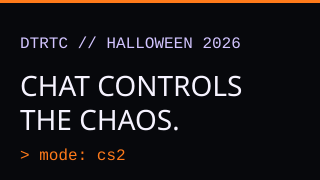
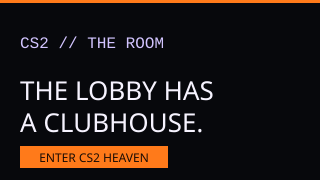
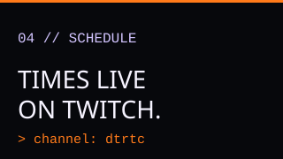

DTRTC // Halloween 2026
Chat controls the chaos.
Tonight is CS2. The lobby votes, the queue stays up, and the room is open. Same black, same orange, on the site and on the Twitch profile.
04 // Schedule
Times live on Twitch.
This page does not hardcode a clock. The week is posted on the channel schedule, and it can change when a marathon runs long.
> schedule --source twitch
> channel: dtrtc
> stored locally: none
> status: posted on the channel
CS2 // The room
The lobby has a clubhouse.
Crosshairs rotate every four hours. The map pool, the first smoke, and the queue sit on one page. The room votes live. Accounts are created in the browser, and DTRT Lab cannot open them.
Clips // Tonight
The clips, in order.
The same ranking that is up today. Lurk King is still first. Open a row to land on that clip.
Profile // Twitch
The channel wears this night.
Banner, offline card, and panels use the same black, lavender labels, and orange buttons as this page. In the Twitch dashboard, set the accent color to #FF7A1A and upload these three panels under the About section.



> accent: #ff7a1a
> background: #07080c
> hud: #d2c4ff
> headline: #f6f3ff
Offline card is the same scene at stream size. Panels are 320 pixels wide, the width Twitch uses.


Lab // AFTERLIGHT
AFTERLIGHT stays up.
The story-driven FPS campaign still lives here. Volume One is readable. The playable island is in development. There is no public download.
07 // Find me